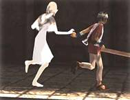

Morality is defined as "conformity to ideals of right human conduct" or "moral conduct: virtue" (Merriam-Webster). These ideals are what guide our society and determine what classifies as appropriate behavior for its members. Generally, members of a society are free to do as they please as long as they do not harm others in the process. While there are exceptions to this rule (wars, abortion, the death penalty, etc.), overall, it is broadly applicable. This preservation of human safety is the basis of the United States' system of laws and ethics.
Ethics are "the principles of conduct governing an individual or a group" and aid in determining what is "right" and "wrong", or, in the case of law, what is "legal" and "illegal" (Merriam-Webster). Illegal actions are typically those that have the potential to infringe on the freedoms of others by inflicting them to some sort of harm. For instance, there are laws that help protect citizens from harm due to automobile accidents, laws that punish those who steal the property of others, and laws to punish those who commit murder. While these and many other laws help to preserve the safety of the citizens, there are not enough laws and not enough enforcement officials to cover every possible situation. Thus, individuals develop their own personal sets of standards which help them determine what correct and incorrect behavior is.
As reliance on technology continues to increase, new ethical dilemmas begin to arise. People who would never dream of shoplifting a CD from a music store give no thought to downloading entire albums from peer-to-peer file-sharing networks. Is it really stealing? Laws say "yes", but when so many people are currently doing it with little chance of being caught, enforcement officials have little hope of catching all of the perpetrators. Many see little harm in such actions, while others feel it is no different than actual shoplifting. Ethical decisions are even more difficult and more personal for dilemmas that are not covered by laws. One way of coping with and exploring these dilemmas is through play where "a society expresses its interpretation of life and the world" (Huzinga 46). No other form of play has more potential for exploration into morality than the ever-pervasive video game.
The video game industry is growing rapidly, and is now a multi-billion dollar a year industry showing no sign of slowing down (DFC); it has proven itself to be nearly recession proof. With this level of popularity, it is evident that video games are now an important part of western culture. As such, it should come as no surprise that video games, once seen as amusement for young children, are now very popular with young adults. A new trend for game developers is the targeting of more mature audiences and tailoring of the content to what they believe this older age demographic is looking for in video game entertainment. Many of the most popular video games now carry a rating of "M," for "Mature," meaning they are not intended for sale to children under the age of seventeen (Entertainment). Game-playing adults are looking to video games not only as entertainment, but also as a means of diversion from reality and exploration of morality, and many games do contain some very interesting moral quandaries. Some video games attempt to "play" with human nature and appeal (or conflict) with the desire to preserve life, whether it is the life of the player's character, or those he or she is sworn to protect or avenge. Unfortunately, most of today's games offer only very shallow moral explorations. This paper will analyze a select few interesting video games and lay the groundwork of a process for creating more meaningful "morality play."
No study of morality in video games can be complete without an in-depth analysis of the insanely popular Grand Theft Auto: Vice City, the fourth installment in the Grand Theft Auto series of games, created by Rockstar Games (Rockstar). Grand Theft Auto: Vice City (GTA: Vice) places the player into the role of Tommy Vercetti, a drug dealer who has been double-crossed and is on a vendetta to get his money back. GTA: Vice places virtually no restrictions on the player's actions in the game. For example, the player can: steal automobiles for transportation (hence the title of the series); rob convenience stores for a little extra cash; run over innocent pedestrians; engage in drive-by shootings; kill just about anyone; pick up and be "serviced" by prostitutes (which temporarily increases the player's health above the normal maximum); and the list goes on and on. As the game progresses, the player can even purchase business establishments to perform more advanced crimes such as counterfeiting money. If it can be imagined, it can probably be done in GTA: Vice, and all while listening to the various music hits from the 1980's that are played whenever Tommy enters a vehicle. So, with all of the apparent mayhem and violence involved in GTA: Vice, why is it so popular? What makes the game fun? Theoretically, the activities in Grand Theft Auto: Vice City are fun because they are wrong.
The game allows players to do things they could never do in real life, unless of course they wanted to go to jail. Certainly, GTA: Vice does have an ever-present police force, which ramps up its efforts based on how much mayhem the player is causing, but even if the player is "busted" (as the game calls it), Tommy reappears sans weapons and a small cash "bribe" outside of the nearest police station. GTA: Vice allows players to explore what things might be like from "the other side" of life, the darker side which most will never experience for themselves. While the premise of the game sounds interesting at first, its execution is lacking in a few ways.
First, there is no permanency to the player's actions. Getting "busted" is more of an inconvenience than anything else, and getting "wasted" (killed) has a very similar result, with Tommy appearing outside of the hospital instead. Presumably, these design decisions were made to make the game less frustrating; on the other hand, if the game is attempting to emulate real life, Tommy should instead have to escape from jail, or have some of his cronies bail him out or orchestrate a jail break. And while the game evidently keeps track of Tommy's criminal activities via a statistics page, the police apparently forget what Tommy looks like between each encounter; no wanted posters appear around the city, and when the police are pursuing Tommy, he can change clothes or repaint the car he is driving to evade the police.
Secondly, the game is inconsistent in its ethics. For example, the player can steal an ambulance and attempt to complete life-saving missions and earn money in return. These missions consist of driving the ambulance to various locations, picking up injured people, and returning them to the hospital within a given time limit. While this is a noble undertaking, the game ironically does not care if the player runs over innocent civilians on the way to pick up the injured people. As long as the few people that are to be rescued are not harmed in any way, the mission is successful. Obviously, this approach seems a bit skewed, since it would seem more plausible that no innocent lives should be lost when the player is behind the wheel of an ambulance. Also, players are rewarded for saving lives, when everywhere else in the game, they are awarded for killing.
Third, Grand Theft Auto: Vice City, although appearing to allow for some more ethical decisions (such as helping others, aiding the police or fire department, etc.), only provides a real opportunity to commit heinous crimes and see how long Tommy can survive before he is caught or killed. If it is to be a real simulation of a criminal world, the player should not be given the options to do anything but commit crimes unless the "good" actions will somehow progress the story. Since the game will only move forward when the player completes missions given to Tommy by one of the gang leaders or other various unsavory characters in the game, the public service missions serve very little purpose other than allowing the player to make some fast cash. At the very least, the player should only be rewarded for performing "evil" acts, not for rescuing people in a stolen ambulance, putting out fires while driving a stolen fire truck, or picking up people in a stolen taxi cab.
Grand Theft Auto: Vice City seems to emulate a real world ethics structure, while in turn placing the player on the opposite side of this structure. Things that are "good" and "bad", "legal" and "illegal" have their own parallels in the city of Vice City. Certainly, Vice City is filled with a lot more criminals, gang members, and prostitutes than one would normally find in even the worst parts of the modern world's cities, but this contributes to the impression that Tommy Vercetti is not such a bad character by comparison. Players can also feel less remorse when killing gun-toting rival gang members than police officers or unarmed civilians, but does that make any of these activities less "bad"? The player is often forced to select the lesser of many evil choices, and while it is possible to avoid a majority of civilian casualties and police encounters, these options are usually more difficult. For example, when fleeing from the scene of a crime at high speed, with the police in hot pursuit, it is difficult to avoid running over at least a few innocent people. While the player can certainly dismiss such losses as "accidents", it does not change the fact that perfectly innocent (albeit "virtual") citizen lives were lost. None of these actions are actually "wrong" since GTA: Vice is just a game, and the game's rules even permit (and encourage) such actions. However, most players cannot dismiss the fact that the game, while fun, is, in certain respects, somewhat disturbing because the actions in the game are considered "bad" in real life. Their subconscious mind tries to construct an ethics system in Vice City, yet ends up generating only confusion, leaving the player uncertain of the moral significance of her or her actions within the game world's city. Like Romans in the colosseum, some players are appalled, yet they thirst for more blood and violence, unable to turn away from its entertainment value. If "play is self-presentation," a game where morality is inconsistent at best leaves players searching for meaning but ending up disoriented (Gadamer 108). Additionally, this flaw diminishes the believability of the game's ethics and morally detaches the player from the game world.
GTA: Vice, by trying to place players on the opposing side of the norm, has certainly sparked its share of controversy – more evidence that video games are being taken seriously as a form of entertainment. And even if playing the game cannot actually "harm" anyone, some feel that the content of the game may. Like many other violent video games, the Grand Theft Auto game series (specifically Grand Theft Auto III) has been blamed for a real life shooting, and, more recently, Grand Theft Auto: Vice City has come under attack for its use of controversial dialogue (Moran). At the beginning of one mission early in the game, Tommy Vercetti is instructed to "Kill all the Haitians!" This text is now going to be edited from future releases of the game. A statement from Take-Two Interactive Software reads:
"As with literature, movies, music and other forms of entertainment, we have strived to create a video game experience with a certain degree of realism, which we believe is our right. Nevertheless, we are aware of the hurt and anger in the Haitian community and have listened to the community's objections to certain statements made in the game" (Reuters).
It is interesting that since the game is trying to emulate a realistic system of criminal ethics, it has come under the same scrutiny that such activity would be subjected to in the real world. If the developers had chosen to use fictitious ethnic groups, there would likely have been no controversy. Strangely, most of the other activity in the game has not faced the same scrutiny. Perhaps it is more difficult to blame the game for increasing aggression against police or for causing more drive-by shootings. Not all games, however, have such inverse ethics structures.
"A land of innocence has no need for gods. . . until fate intervenes. When people pray, a god is always born. Able to change eternity. . . that god is YOU. Are you a blessing or a curse? Good or evil? Be what you will. . . you are destiny!" (Lionhead)
Black & White, by Lionhead Studios, begins with a voice-over of the text above, and the game itself serves as an interesting simulation of polytheism. The player is not the only "god" in the game, other gods compete for the beliefs of villagers. It is the role of the player to maintain the villager's belief in him or her through the performance of miracles and by either causing the villagers to praise or fear their god's power. The player possesses a giant creature through which most of these acts are performed, and, depending on how they choose to train their creature, it either becomes increasingly more "good" or "evil" as it grows, with its appearance changing accordingly. Along with this, the game world and landscape itself changes in response to the good and evil actions of the player. The following images demonstrate the good and evil variations of an ape-like creature and the corresponding changes to the landscape:
In Black & White, players can toy with evil or choose to be good – they are rewarded either way. For example, there is one occurrence early in the game when a villager has an item that the player needs to obtain in order to progress the story of the game. The villager offers it to the player in return for bringing a sickly brother back home to be tended to by his family. Here, the player has two options: smash the villager's house and take the needed item, thus demonstrating their power, or, help the villager's brother, demonstrating their kindness. The choice is up to the player, black or white, evil or good, but the end result is the same. It is all a matter of whether or not the player wishes the people to fear or revere their god.
Black & White's ethics system is easy for the player to comprehend. Essentially, it parallels real-world concepts of what is right and wrong – doing harm is "evil" and helping others, or preserving life, is "good." Where the other gods are involved, it is assumed that they must be abolished and their followers convinced to follow the player as a deity instead. This is accomplished by impressing the villagers and by defeating the creatures belonging to the other gods. Black & White is somewhat simplistic in its approach, but as a game of ethics, it creates some interesting moral dilemmas for the player.
A sequel, entitled Black & White 2, is currently in the works and will replace the structure used in the original with one based on the concepts of war versus peace (Black). Fable, another game in development by Lionhead Studios, promises even more richly detailed morality experimentation. The player will take on the role of a hero and will be able to shape the public's perception of him by the actions he takes in the game world. An Xbox exclusive release (targeted for May 1st, 2004), Fable promises to allow the player to truly decide how they want their in-game character to develop. The character begins the game as a child, and ages throughout the game's progression, with his appearance changing in response to the player's moral decisions in dealing with other in-game characters. While winning or losing is not necessarily based on how good or evil the character becomes, it will have a direct effect on how other non-player characters (NPCs) respond to him. The player will even need to decide if love is worth sacrificing all else for happiness (Big). Fable could be a good first step in allowing game players to experiment with morality in a game environment and observe the results of their choices.
Deus Ex, created by Ion Storm L.P., is an action-adventure 1st-person perspective role-playing game that places the player in the role of J.C. Denton, a nano-technology augmented agent working for a secret branch of the government (Ion). The game is riddled with science fiction and conspiracy theory-based themes, creating an environment where the player is never sure of who can and should be trusted. In the world of Deus Ex, the player has freedom to choose ethical solutions to many of the games puzzles – Violence is often not the only option, and many problems are better solved through more covert means such as stealth and/or non-fatal attack methods. The game world "watches" the player and responds accordingly, so there are consequences to most of the player's actions. For example, in the first mission of the game, if the player decides to kill a majority of the enemies, rather than trying to keep casualties at a minimum, J.C.'s commanding officer will reprimand him, requesting that he choose a less violent approach next time. Likewise, walking into a public building (such as a bar) with weapons drawn will cause the inhabitants to run around screaming, and if any of them are armed, open fire on J.C.
Deus Ex: Invisible War, the sequel to Deus Ex, promises to offer "non-lethal, non-violent resolution to conflict, allowing you to make an ethical statement through your actions" (Ion). While the premise sounds exciting, the game unfortunately does not always allow for good "ethical" choices. In the mission used in the game's demo version, the player must obtain an aircraft and a pilot to travel to another destination. A woman by the name of Sophia Sak (seen in the image to the right) is holding a jet, belonging to pilot Sid Black, as collateral due to a debt of 1,000 credits owed to her for a lost shipment of goods. The player can approach the problem in one of two ways: Incapacitate Sophia Sak and all of her security guards in order to gain access to the jet, or obtain the 1,000 credits necessary to pay for the release of Sid Black's jet. Killing is obviously not a valid "ethical" decision, or at least not one considered to be "good," so that can be discredited automatically. However, it is possible to incapacitate enemies without killing them; using a variety of batons and stun weapons, the player can render Sophia Sak and her security guards unconscious.
Earning the money needed for payment of Sid's piloting skills (and to pay his debt as well, if needed) proves to be a more shady "ethical" decision. The only way to earn the required money is to bet on a greasel fight (greasels are mutant, dinosaur-like creatures, pitted against each other to fight to the death in cages). The player is offered an opportunity to rig the fight by killing the prize-winning greasel, Gob-Zilla (which Sophia Sak owns), before the fight begins. While killing a greasel and betting on a rigged fight is possibly more ethical than killing five or six humans, it is still not a decision that most people would consider "ethical." In the framework of the game, however, it is an acceptable decision. It is also possible to simply lie about killing Gob-Zilla and bet for him (instead of against his weaker replacement) to win the required money. Perhaps lying is better than killing, but neither is "ethical". In the world of Deus Ex: Invisible War, stealth and deception are considered more "ethical" than violence, even though greasels apparently do not deserve the right to live. This is not to say that the game is flawed in giving players these options, but it does not always seem to allow for alternatives that are in no way "unethical". Over all, Deus Ex: Invisible War gives players more freedom to make ethical decisions than previous games. It is also interesting to note that even the player's gender selection for his or her avatar has an effect on the game experience. If the player is using a female avatar, for example, Sid's fee is 400 credits as opposed to the 500 credits charged for a male passenger on his jet. It seems that sometimes it helps to take on the role of an attractive, female avatar.
The Thing, by Computer Artworks, is a combination 3rd-person perspective survival horror and squad-based combat game based on the 1982 John Carpenter film of the same name (Universal). Picking up shortly after the events portrayed in the film, The Thing places the player in the role of Captain Blake, a military officer sent to U.S. Outpost 31 in Antarctica to investigate the mysterious deaths of an American scientific expedition team. Early on, the player discovers that something alien is at work at the outpost, and a virus has spread, infecting most of the remaining team members. This shape-shifting alien life form infects its victims and then takes their form, making it nearly impossible to tell who is potentially infected, and who is not. Eventually, all infected individuals mutate into hideous "things" and can then only be killed by being burnt.
Throughout the course of the game, the player is able to partner up with a number of non-player characters (NPCs) who will fight along Blake against the invading thing creatures. Unique to The Thing, these NPCs each possess individual "fear" and "trust" levels. Their level of fear relates to how frightened they are in their current situation. This can be managed by the player by getting the team member out of the area, by giving him a weapon so he can protect himself, or (temporarily) by giving him an adrenaline injection. If an NPC's fear level rises too high, he will begin to "crack up" and even eventually commit suicide.
Trust levels relate to how much the NPCs trust Blake and how confident they are that he is not infected. These levels can be seen via a squad member management menu. Additionally, icons will appear over squad members (seen in the image on the right) to notify the player when they have specific needs (medical attention, ammo, weapon, etc.). The other characters must be confident that Blake is not a thing himself, and if their trust levels drop too low, they will refuse to take commands from Blake and may even open fire on him. To manage the trust of his team members, Blake can provide them with weapons, ammo, and health. He can even perform a blood test on himself to definitively prove that he is not infected. The trust levels of the NPCs will also fluctuate based on how Blake performs in combat. If he shies away from conflict, they will loose trust in him, whereas if he is aggressively killing the thing creatures, their trust levels will increase. Overall, it is typically not difficult for the player to create and maintain trust between Blake and his teammates since killing the thing creatures is a core component of the gameplay.
Since anyone can potentially be a "thing", The Thing introduces an interesting moral dilemma. Is it right to kill a team member without definitive proof of infection? After all, the player does not want one of Blake's team members to mutate and begin attacking him or his other team members (there can be up to four team members allied with Blake at one time). It would be an interesting scenario if one of Blake's team members who has been with him for much of the game is found to be infected but has not yet mutated (a mutated thing creature is seen in the image to the left). The player would then have to decide whether or not to risk his personal safety and the safety and trust of his team members by allowing the infected individual to live. Unfortunately, since the NPCs never live very long before they mutate or are killed, the game never allows the player to become emotionally attached to any of the NPCs. In one game level, Blake must rescue a scientist stranded in a research facility; success or failure of the mission hinges on the successful rescue of this scientist. After a rather lengthy and challenging rescue mission, the scientist is killed in the following cut-scene. Because of situations like this, it soon becomes of little importance to the player when squad members die in combat or must be executed due to infection. The player simply learns to not care about any life but Blake's. This oversight on behalf of the developers negates many of the potentially interesting moral dilemmas which could have been present in the game. If the player is not encouraged to care about Blake's squad members, the consequences of their deaths are unimportant; the game then becomes a simple "kill the enemies and save yourself" scenario, void of nearly all significant moral implications.
Ico (pronounced ee-ko) is a Playstation2 exclusive game produced by Sony Computer Entertainment Inc. and released in the fall of 2001 (Sony). While the game sold only around 70,000 copies, those who were fortunate enough to play the game typically have nothing but praise for it (Weir). Ico is a very unique game, difficult to compare to most other games in the adventure genre, and while the game mechanics are simplistic, the nuanced storyline and richly detailed environments set it apart from other Playstation2 games. In fact, the game has more in common with the film medium than it does with other video games, lacking any on-screen displays such as a health meter or score. Ico is simply about solving puzzles and protecting and rescuing a young girl named Yorda in the process. The web site for the game summarizes the story as the following:
"Ico is the story of a young boy who – born with an abnormality which makes him grow horns – is destined to die, to ward off the 'evil eye' that his horns represent. Any misfortune that befalls his village is attributed to Ico, and when the boy turns 12, the villagers decide the time has come to erase his existence before more calamities befall them.
Ico is taken away to a secluded cliff-side on which lies a dank, dark and disturbing ancient fortress. Those that place Ico here intend to leave him to starve or freeze to death within these ruinous walls – only then will his curse be lifted from their village. The fortress is uninhabited, they believe, and if any life should exist there, it will be in the form of malign spirits who will surely scare the boy to death if the cold and hunger don't get to him first.
But Ico is not alone. In his feverish, dreamy state, the vision of a ghostly female appears before Ico. And when he breaks free from his tomb, Ico learns that this was no dream or trick of the mind – the girl is flesh and blood, and is hanging above him like a delicate, celestial caged bird. As much as Ico needs her help, he soon realizes this mysterious girl needs his help, too.
So begins a journey in which you, playing as Ico, support Yorda as you look for an escape route. For Yorda, this means freedom from an evil mother who intends to keep her imprisoned in the fortress forever more. For both of you, this means sealing the ultimate pact of friendship – without each other's help, Yorda is doomed to be shackled down by shadowy spirits that lurk in the darkness and you are destined to fulfill your tragic fate. But together, you can overcome evil. Where Yorda is weak, you can be strong. When you don't know where to look, Yorda can point to the light. With each other's encouragement, you can both wake up from your nightmares" (Sony).
Ico is a refreshingly unique game. While the story itself is nothing terribly unique (a boy saving a princess), the game draws the player into its world and makes the player care about the characters. Ico and Yorda do not speak the same language, and while Ico will call out to Yorda in his native tongue, there is never any understandable conversation between the characters. The game makes up for this lack of verbal communication by adding subtle touches to the character's non-verbal animated interactions. For example, if Ico falls when attempting a jump, Yorda will come running over to him to see if he is okay. If Yorda sees something that may help Ico solve a puzzle, she is likely to stand by it until the player picks up on her hint. Throughout the game, the player is reminded that language barriers need not block the ability to care for and help another individual. At the heart of Ico is the unspoken rule that in order to succeed, the characters must help one another – a mutual dependency that is required for survival (or in this case, "winning" the game).
Yorda is weak and frail and needs Ico's physical strength to help her over and around many of the game's obstacles. And while this does reinforce unfortunate stereotypes all too common in video games, it is a critical gameplay element. For instance, Ico must help Yorda by lowering bridges to help her across chasms, pulling her up onto ledges that are too high for her to climb, or by pulling levers that she is too weak to move. Ico must also protect Yorda from the dark spirits present in the fortress who regularly appear and attempt to capture her; if she is left alone for too long, the spirits will attack, and it creates a frantic tension when the player must rush back to protect her while in the middle of solving one of the game's puzzles. This element of suspense adds to the sense of responsibility that the player feels for Yorda's safety, and the violence involved is muted by the fact that the enemies appear only as dark, shadowy, spirit-like figures.
Ico in turn needs Yorda's magical powers and guidance to help them escape from the fortress. She can aid Ico by opening doors which are held shut by a magical power that she is able to counteract. Constant teamwork is required for escape from the fortress. Unlike many games that have a very self-serving theme, Ico succeeds in developing an atmosphere of friendship and teamwork. This, combined with the graphically rich environments of the game, makes Ico a very memorable game experience.
Morally, Ico teaches the importance of bravery, teamwork, and compassion. Without forcing a heavy-handed message of morality onto the player, the game subtly coerces the player into actually caring for the game's characters even though only a small amount of dialogue is spoken during the game and very little is known of the characters at its conclusion. After playing Ico, the player is left saddened that the story has ended, yet at the same time curious about the elements left unexplained. There is rumor of a sequel in the works, but, given its meager sales in the U.S., it is not a very hopeful scenario for the few American game players who played and enjoyed the first game. Regardless of whether a sequel is released which continues the story of Ico and Yorda, Ico is certainly a step in the right direction in implementing a morality system which can encourage players to consider their real world standards without compromising the fun of the game world experience.
With a few exceptions, the current future of video game ethics is looking relatively bleak. Few and far between are games such as Deus Ex, Fable, and Ico. "M" rated games such as The Thing and Grand Theft Auto: Vice City are becoming the norm, with developers assuming that the "maturity" of the content must match their perceived target audience's age bracket. Recent games, such as Manhunt, push the envelope of gratuitously violent and disturbing gameplay. The game synopsis is as follows:
"James Cash is the death row inmate and protagonist of Manhunt – an ultra-violent new game for PlayStation2 from Rockstar Games – and is given a new lease of life when his lethal injection turns out to be a sedative.
The Darkwoods Penitentiary staff have spared Cash so he can star in a movie – of sorts. He is taken to a series of eerie settings where he sneaks up on gangs of criminals and snuffs them, one at a time. His first weapon is a plastic bag.
Guiding Cash ever so carefully, players help him slip up behind an unsuspecting thug and slip the bag over his head. Once the bag is on, the camera angle shifts as a video records the 'execution.'
Cash gets points when he successfully creeps up and snuffs folk. He gets wounds and demerits when they spot him and fight back" (Kent).
Not too surprisingly, there has already been a flurry of controversy surrounding the game. While video games are no stranger to violence, even graphic violence, this is the first game that actually simulates violent, hands-on murder. Sale and rental of the game has already been outlawed in New Zealand due to its "likely effect on 'players of any age'" (Associated). It is a shame that game developers have had to stoop this low to find something new and fresh for game players to latch onto. Is this the type of immorality that games should be encouraging? Certainly there are better ways to explore ethics in video games.
Perhaps there will always be a demand for gratuitous violence in video games, but without viable alternatives for deeply immersive moral gameplay, gamers are left with little else to choose. Games could certainly benefit from believable ethics systems – ethics can add to the realism and/or believability of a video game environment and provide the illusion of a cohesive, functional game world. Developers can integrate ethics into gameplay without compromising the "fun factor." Through the study that I performed on the various games discussed in this paper, I propose the following methods – while possibly not universally applicable, they do provide some general guidelines for game developers looking to integrate a more believable ethics structure into their games:
#1 – Consistency
Players should not be awarded for an action and similarly rewarded for a nearly opposite action (See Grand Theft Auto: Vice City discussion). If the player is rewarded for "wrong" actions, then he or she should not also be rewarded for "right" actions. The ethics of the game world should be universally applicable within the game world. While there can be groups (or even the player) working against the ethics of the game, these actions should always be perceived as socially unacceptable within the ethics structure of the game.
#2 – Cause & Effect
Actions in the game world should have logical consequences based on the ethics system inherent in the game. If the player steals an automobile, he should be pursued by the police (Grand Theft Auto: Vice City) and punished if caught. Or, if the player steals something from right in front of an NPC, the NPC should accuse them of such actions.
#3 – NPC Reactions
This one coincides with #2. Non-player characters (NPCs) should follow the same system of ethics set up for the player and react to the player's actions accordingly. If the player pulls out a gun in a public space, they should scream and run away or take defensive action; if the player lies to them, they should lose trust in him.
#4 – Memory
NPCs should remember how the player has acted in his or her relationship with them and respond to current interactions with a memory of the past. For example, if the player has shown himself to be a violent individual (and the NPC is aware of this), the NPC should react with fear or distrust. If the player has been violent toward a particular NPC or perhaps a family member or friend of the NPC, the NPC could potentially retaliate and attack the player.
#5 – Alternatives
Provide alternatives that the player would consider "ethical" given the circumstances set up in the game. In the case of Deus Ex: Invisible War, give the player a viable option that does not involve lying.
#6 – Caring
The player should feel that their actions in the game world matter in the long term. The player should care about the NPCs, whether they live or die, and whether the NPCs approve of the player's actions – guilt can be a powerful tool.
#7 – Conflict
If it adds to the game experience, introduce moral conflict into the game's story – force the player to make decisions that require them to choose between two seemingly "right" answers. Or, make the player choose which "path" they desire to follow. Will they be "good", or will they be "evil"? Each choice should have its own consequences.
This list is likely not all-inclusive and demands further development, but it should give developers a nudge in the right direction. Since it is not possible to realistically "harm" another physical human in a video game, they may not actually have "ethics" in the most strict definition of the term. However, they can allow for some interesting explorations into ethics, and, depending on the ethical standards of the person playing, video games can certainly contain content that players find as morally objectionable. Some people may avoid playing Grand Theft Auto: Vice City because the game's content conflicts with their real world morals, and New Zealand has banned sale and rental of Manhunt due to its morally objectionable content.
Whether good or bad, games can make people think about moral dilemmas in entirely new ways, without the risk of actually harming anyone in real life. All game developers need now is game content which lends itself to realistic ethics systems and morally complicated situations – games that allow players to truly express themselves morally while not being forced into making game decisions that conflict with their position on the game world's ethics. And when games reach a level of visual realism that blurs the line between what is reality and what is a game, developers need to be ready to handle the level of detail required for a realistic simulation of ethics.
Ethics systems are generally consistent, but they are non all-encompassing. There will always be situations that require decisions to be made that are not explicitly covered by a culture's ethics. Perhaps some day, people will be able to use video games to explore the consequences of making such difficult decisions, but the current ethics structures in most video games simply will not allow for it. And until video game developers begin spending more time on the moral content of their games, players will be content to steal cars, run over pedestrians, shoot aliens, and attack villagers with giant ape creatures. Eventually, people will expect video games to fill the moral gaps left in society, and with the correct procedures in place, they will be able fill that gap.
Associated Press. "Gruesome video game becomes first banned in New Zealand." USAToday.com. [Online] 12 Dec. 2003. <link>.
Big Blue Box Studios. "Gameplay." Fable. [Online] 14 Dec. 2003. <link>.
"Black & White II – Edited Chat Log." IReallyDontCare.com. [Online] 24 Nov. 2003. <link>.
DFC Intelligence. "A New Peak for Interactive Entertainment Sales?" DFC Intelligence.
[Online] 18 Nov. 2003. <link>.
Entertainment Software Rating Board. "ESRB Game Ratings – Game Rating & Descriptor Guide." Entertainment Software Rating Board – ESRB. [Online] 1999. <link>.
Gadamer, Hans-Georg. Truth and Method. New York: Crossroad, 1989.
GameSpot. "Deus Ex: Sophia Sak." [Online image] 2001. <link>.
GameSpot. "The Thing: Health Icon." [Online image] 2001. <link>.
GameSpot. "The Thing: Creature." [Online image] 2001. <link>.
Huzinga, Johan. Homo Ludens. Boston: Beacon Press, 1955.
Ion Storm L.P. Deus Ex. Eidos Interactive, 2000.
Ion Storm L.P. Deus Ex: Invisible War. Eidos Interactive. [Online] 13 Dec. 2003. <link>.
Kent, Steven L. "Mortality vs. Morality." The Japan Times. [Online] 11 Dec. 2003. <link>.
Lionhead Studios, Ltd. Black & White. Electronic Arts, Inc., 2001.
Lionhead Studios, Ltd. "Good Ape." Electronic Arts, Inc. [Online image] 2001. <link>.
Lionhead Studios, Ltd. "Evil Ape." Electronic Arts, Inc. [Online image] 2001. <link>.
Moran, Joseph. "Rockstar Files to Dismiss GTA Lawsuit." GameMarketWatch.com. [Online] 11 Nov. 2003. <link>.
Merriam-Webster. "Merriam-Webster Online." M-W.com. [Online] 2002. <link>.
Reuters Limited. "Take-Two to edit Haitian remarks from video game." USAToday.com. [Online] 11 Dec. 2003. <link>.
Rockstar Games. Grand Theft Auto: Vice City. Rockstar Games, 2002.
Sony Computer Entertainment Inc. Ico. Sony Computer Entertainment America, 2001.
Sony Computer Entertainment Inc. "ICOTM ¤ PlayStation.Com." ICO. [Online] 2001. <link>.
Sony Computer Entertainment Inc. "Ico Game Screenshots." Sony Computer Entertainment
America. [Online image] 2001. <link>.
Universal Interactive, Inc. "The Thing Games." Computer Artworks presents THE THING. [Online] 2002. <link>.
Universal Interactive, Inc. The Thing. Black Label Games, Computer Artworks, and Vivendi Universal Games, 2002.
Weir, Dale. "Do Consumers Really Want Original Game Content?" GameCritics.com. [Online] Aug. 2003. <link>.